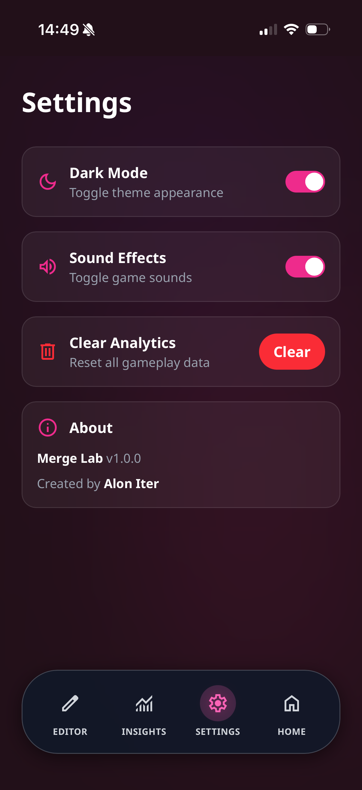
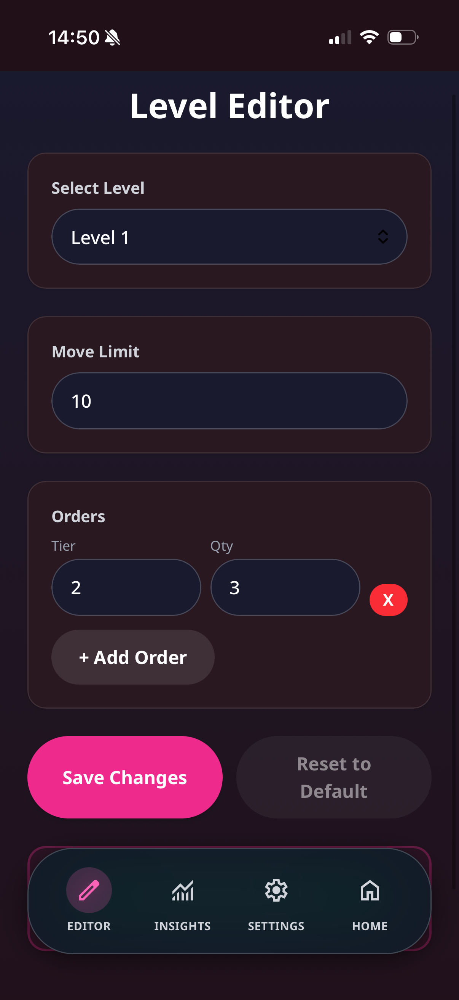
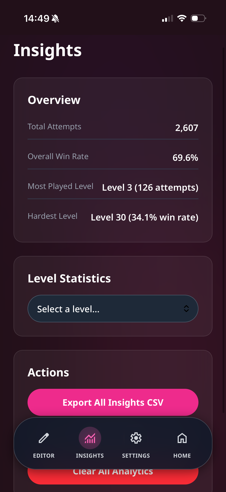
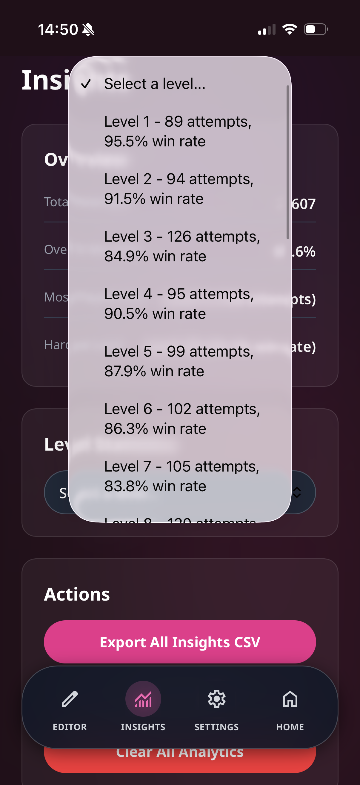

Product Goal
Practice data-driven balancing by building not just the puzzle loop, but also the tools needed to understand difficulty and adjust it quickly.
My Role
- Built the merge core, level structure, and mobile interface
- Created a live editor for tuning level parameters without rebuilding the game
- Added lightweight insights views to surface win rates and difficulty friction
Problem / Opportunity
Balancing often slows down because each adjustment requires too much manual work and not enough visibility. The opportunity was to treat tuning as a product workflow problem, not only a gameplay problem.
What I Defined
- A merge puzzle loop built around order-based level goals
- An in-app level editor for changing parameters instantly
- An insights layer that highlights hardest levels, win-rate drops, and friction signals
- A lightweight export mindset so balancing decisions can be sanity-checked outside the app
How I Worked with Engineering / QA
This was a solo build, so I treated the editor and insights view as internal tooling that normally helps design, engineering, and QA stay aligned. Every tuning change could be tested immediately, which reduced the gap between identifying a problem and verifying the fix.
Metrics or Success Criteria
- Ability to identify friction quickly instead of tuning by guesswork
- Ability to change level parameters without slowing the iteration loop
- Level-specific win-rate visibility to support balancing decisions
- Level 3 surfaced at 84.9% win rate and became an immediate tuning case
Iteration / What Changed
Once the data showed where friction lived, the editor became the key workflow win. I could adjust move limits and validate the change in seconds instead of treating each balancing pass like a full rebuild.
Screens





Next Improvements
- Add A/B testing support for different move limits and level settings
- Surface a clearer drop-off funnel directly inside the insights dashboard
- Add cloud save for cross-device testing and easier experiment sharing
Try the Balancing Workflow
Play the prototype and inspect how the editor and insights views support faster iteration.
Play Merge Lab